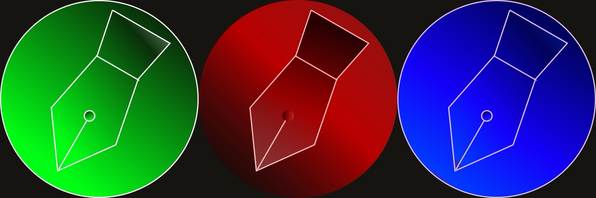

Red Pen Tools
Small, fast tools for VFX editors cutting in Avid. Shot lists, pulls and titles straight from your EDLs, on Mac, iPhone and iPad.
Works with Avid Media Composer, Premiere Pro and Final Cut Pro.

VFX Shot List Maker
Turns an EDL into a clean VFX shot list with IDs, timecodes and descriptions, ready for your spreadsheet.
VFX Shot Puller
Splits a master QuickTime into individual shot files with handles, straight from your markers, and prints pull slips.
VFX Title Maker
Turns EDL markers into a SubCap file for Avid, so every VFX shot carries its ID on screen.
Red Pen Tools
All 19 tools in one app: change lists, lineups, pull lists, vendor assignment, EDL, ALE and AAF inspectors, and timecode and speed math.
Your files stay with you
Every tool runs on your device. Your EDLs, AAFs and exports stay on the device or in your own iCloud Drive. Nothing is uploaded to us. Read the privacy policy.
Questions or a tool you wish existed: ron@rauch123.com